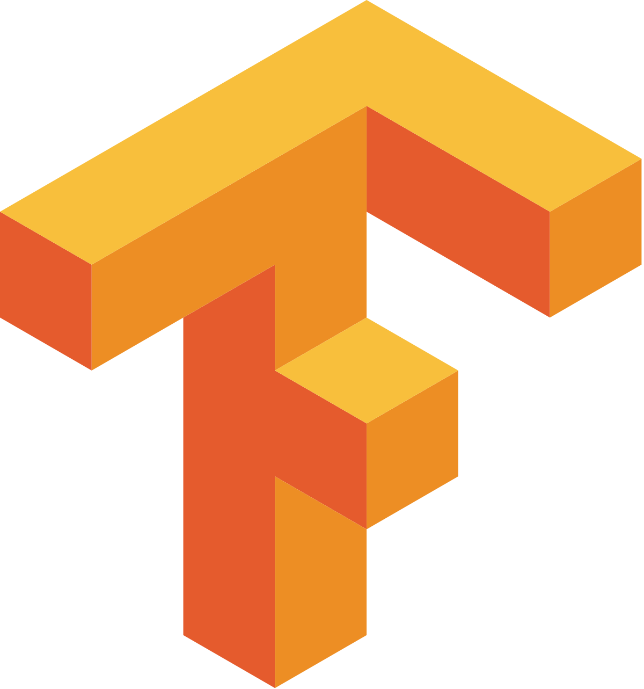
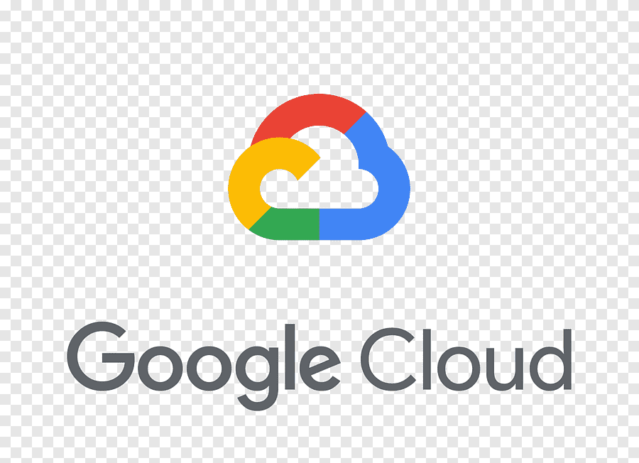

Google Cloud Generative AI Leader
Learning journey and enterprise GenAI takeaways covering responsible AI, grounding and RAG, agents, Gemini, Vertex AI, metrics, and certification preparation.
Read the guideSenior data scientist and platform architect. I design Spark data pipelines, cloud migrations, and production ML and AI systems.
I am a senior data scientist and data platform architect with 10 years of experience building machine learning and data-intensive systems. My work spans Spark pipelines, cloud migrations on GCP and AWS, infrastructure as code, MLOps, and production AI systems.
I enjoy turning ambiguous business problems into reliable systems: clarifying the problem, writing the architecture decision, validating the migration against what runs today, and leaving runbooks and templates others can reuse.
 Python
Python

TensorFlow CSS
CSS

GCPSelected writing and projects across applied AI, data science systems, infrastructure, and technical explainability.
Learning journey and enterprise GenAI takeaways covering responsible AI, grounding and RAG, agents, Gemini, Vertex AI, metrics, and certification preparation.
Read the guideA practical explanation of product complement and substitute relationships using sales data, network science, null models, and Spark implementation notes.
Read the articleA hands-on introduction to Infrastructure as Code with Terraform, written as a practical one-hour tutorial for engineers getting started with repeatable infrastructure.
Open tutorial